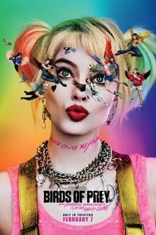
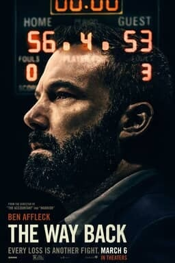
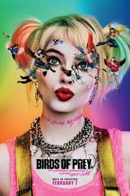
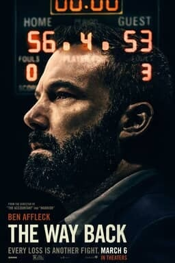
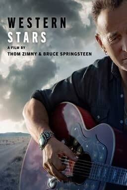
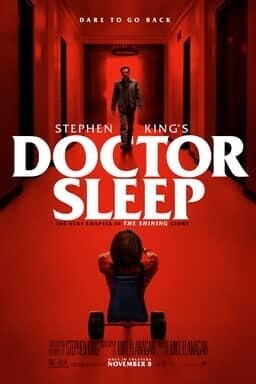
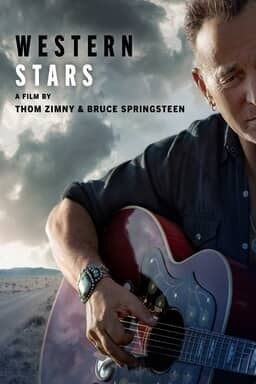
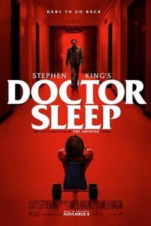

 



She was Ellen’s very first guest a whopping 17 years ago, and now she’s guest hosting on the hit show for her beloved ‘real-life friend.’ Jennifer Aniston looked sublime as she guest-hosted for Ellen DeGeneres on her hit daytime show Friday, while Ellen claimed she had to go to the DMV. Aniston also reminded the audience that The Ellen DeGeneres Show is filmed on the Warner Bros. lot in Burbank, which just so happened to have been Aniston’s professional home when she was filming Friends from 1994 to 2004 ‘She throws pennies away. She throws them right into the garbage, in front of people,’ Jen exclaimed, poking fun at Ellen’s staggering financial success. ‘Good luck pennies!’ Another big ‘reveal’ came when Aniston said, ‘I can’t even walk into her dressing room because she’s burning one of those Gwyneth Paltrow candles!’ After a few more jokey secrets, the Cake star began reminiscing about the past and shared a true ‘secret,’ or rather, little-known fact about her and Ellen: ‘I was actually Ellen’s very first guest on this show!’ She was referring to her September 8, 2003 appearance on Ellen’s show, which indeed was the first-ever episode of the long-running, Emmy Award-winning talk show.
Tm &"c" 2020 Warner Broos Inc. All right reserved